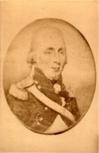

Beaubien-Perrault-Benington - Person Sheet
Beaubien-Perrault-Benington - Person Sheet

Death15 Nov 1822, Québec, Québec34
Burial17 Nov 1822, Québec, Québec34
Occupationjuge, officier
FatherJohn Allison (<1738-)
MotherMargaret Spenceley (1725-)
Spouses
Birth24 Nov 1767, Detroit, MI, USA35
Death27 Mar 1839, Québec, Québec35
FatherJacques Duperron Baby (1731-1789)
MotherSuzanne Réaume (1740-1813)
Marriageabt 1794, Detroit, MI, USA
Notes for Thomas Allison
24 [bir] father John, no mother named.
[Casgrain] Militaire et magistrat.
Capitaine dans le 5e régiment d'infanterie de sa majesté britannique.
Le 28-2-1798, Allison vendit sa commission et vint se fixer à
Québec.
Le 17 mars 1810, Sir James Craig envoya saisir le matériel de
l'imprimerie du "Canadien". Ce fut le Capt Allison qui, en vertu de
sa qualité de juge de la paix et de magistrat, commanda les soldats
qui effectuèrent la saisie et en même temps Bédard, Blanchet, et
Taschereau, ainsi que l'imprimeur, qui fut arrêté pour trahison. (cv
Jean-Antoine Panet)
La famille Allison est éteinte au Canada, et probablement en
Angleterre.
[Pierre George ROy] Parmi les magistrats de la cite de Québec, le
capt Th. Allison se faisait remarquer pour son inflexibilité
militaire envers les prévenus.
36 Album Stuart-deGaspé
Il ne fut pas présent au marriage de sa fille.
Forcett, Richmond, North Yorkshire
http://maps.google.com/maps?f=q&hl=en&geoc...251&z=9&om=1
[Casgrain] Militaire et magistrat.
Capitaine dans le 5e régiment d'infanterie de sa majesté britannique.
Le 28-2-1798, Allison vendit sa commission et vint se fixer à
Québec.
Le 17 mars 1810, Sir James Craig envoya saisir le matériel de
l'imprimerie du "Canadien". Ce fut le Capt Allison qui, en vertu de
sa qualité de juge de la paix et de magistrat, commanda les soldats
qui effectuèrent la saisie et en même temps Bédard, Blanchet, et
Taschereau, ainsi que l'imprimeur, qui fut arrêté pour trahison. (cv
Jean-Antoine Panet)
La famille Allison est éteinte au Canada, et probablement en
Angleterre.
[Pierre George ROy] Parmi les magistrats de la cite de Québec, le
capt Th. Allison se faisait remarquer pour son inflexibilité
militaire envers les prévenus.
36 Album Stuart-deGaspé
Il ne fut pas présent au marriage de sa fille.
Forcett, Richmond, North Yorkshire
http://maps.google.com/maps?f=q&hl=en&geoc...251&z=9&om=1